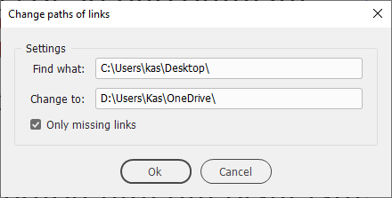

Restore broken links after server migration in InDesign
Script for InDesign CS3 and above. Written by Kasyan. Version 1.1

You can specify a platform-specific path name, or a path in a platform-independent format known as universal resource identifier (URI) notation, or Mac OS 9 path name (for Mac).
For example any of the following notations are valid:
Windows
c:\dir\file (Windows path name)
/c/dir/file (URI path name)
//10.44.54.70/Test/images (uniform naming convention (UNC) path name of the form //servername/sharename)
//Apple/Test/images
\\10.44.54.70\Test\images (Windows path name)
\\Apple\Test\images (Windows path name)
where 10.44.54.70 IP address of the server, Apple -- DNS name of the server, Test -- share name
Mac
The following examples assume that the startup volume is MacOSX, and that there is a mounted volume Remote.
/dir/file (Mac OS X path name)
/MacOSX/dir/file (URI path name)
MacOSX:dir:file (Mac OS 9 path name)
/Remote/dir/file (URI path name)
Remote:dir:file (Mac OS 9 path name)
Remote/dir/file (Mac OS X path name)
You can just copy a part of the path in Links panel and paste it to the script's dialog. In CS4, make sure to choose "Copy Platform Style Path" in context menu.
The case of the characters doesn't matter: you can type both in upper and lowercase in the script's dialog. For example — Test, test, TEST, TeSt — are all the same for the script.
Turn on the ‘Only missing links’ check box if you want to relink only missing links.
Click here to download the script.
See also Update links to new drive letters script
The previous version is here just in case.
If you found my scripts useful and want me to develop more free scripts, consider supporting me by donating via PayPal directly to my e-mail: askoldich [at] yahoo [dot] com. (Due to PayPal’s restrictions for Ukraine, I can’t have a Donate button on my site.)